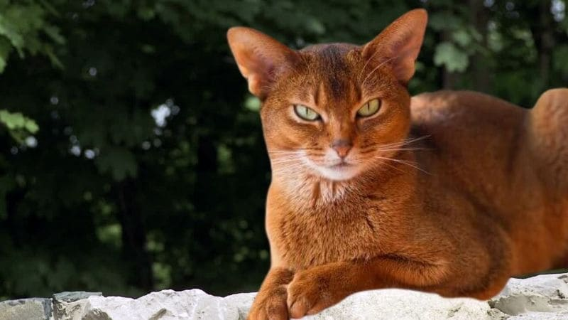

Gatos
←
→
Maullidos
Videos
Contactar
Mejores razas de gatos
Gato Persa
Gato Persa by Pexels
Gatitos Persa by Pixabay
Gato Abisinio

Gato Abisinio
Gato Síames
Gato Síames
 Gato Persa by Pexels
Gato Persa by Pexels
 Gatitos Persa by Pixabay
Gatitos Persa by Pixabay
 Gato Síames
Gato Síames